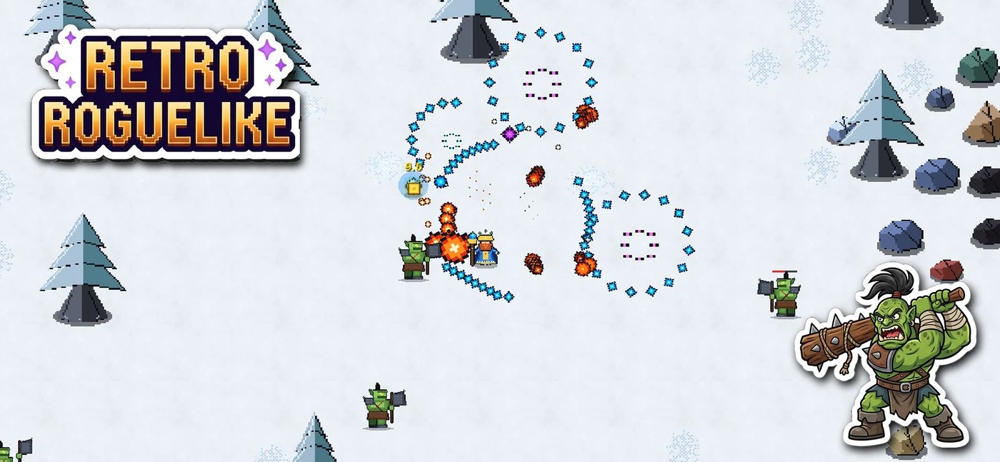
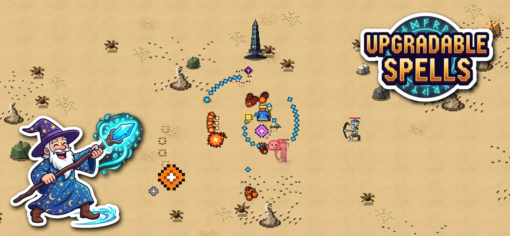
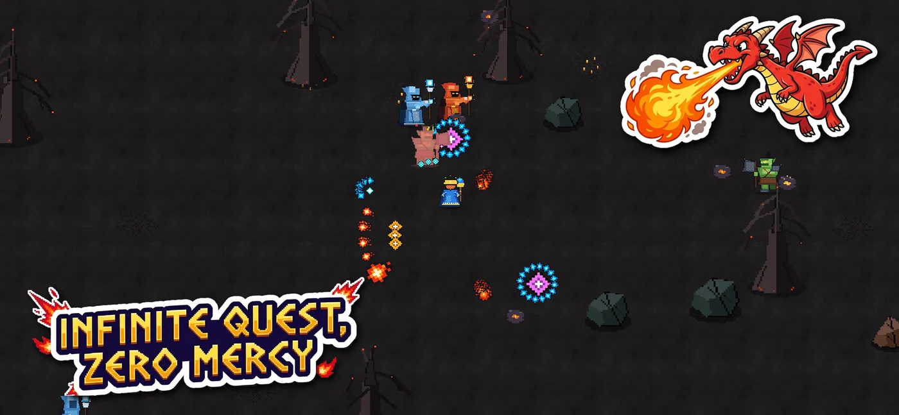
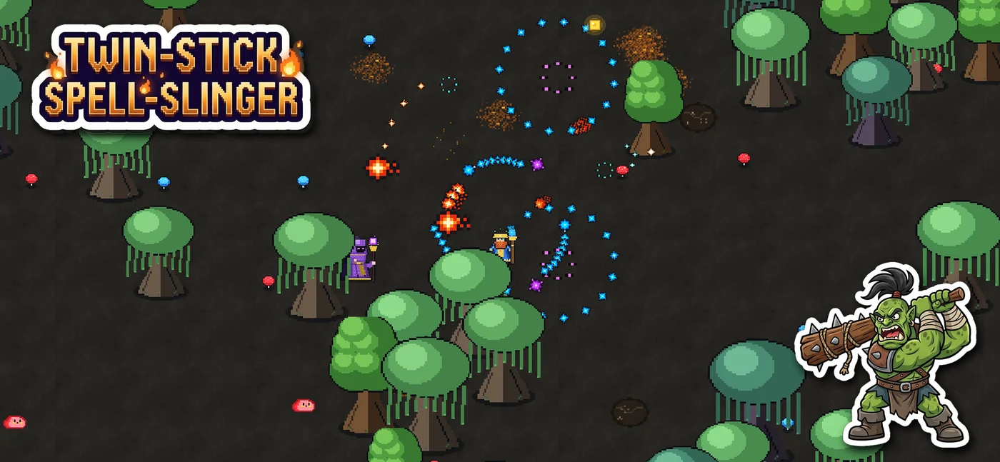
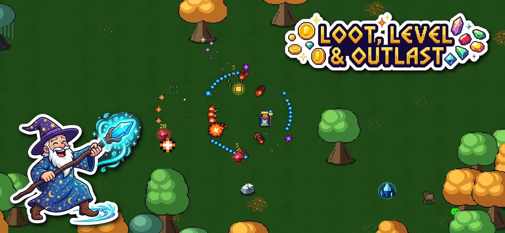

Screenshots

Snowy Tundra
Desert Ruins
Volcanic Depths
Dark Forest
Verdant ForestGame Details
- Twin-stick controls: Smooth on-screen virtual sticks or full Bluetooth gamepad support (Xbox, PlayStation, MFi).
- Elemental arcana: Upgradeable fireballs, frost novae, chain lightning, and arcane shotgun blasts.
- 5 distinct biomes: Tundra, desert, volcano, dark forest, and verdant woodlands with unique enemies and bosses.
- Endless mode: Test how long your spellcraft can outlast escalating enemy waves.
- Offline play: Fully playable without an active internet connection.
Support & Privacy
Have a question, feedback, or need to report a bug? Email us directly at support@odderotter.online.
Privacy Policy
Wizard's Journey does not collect, store, or sell personally identifying user data. Game save data is stored locally on your device (or in your personal iCloud account). Optional rewarded advertisements are provided via Google AdMob. Diagnostic and crash reports are collected anonymously through Apple developer analytics.